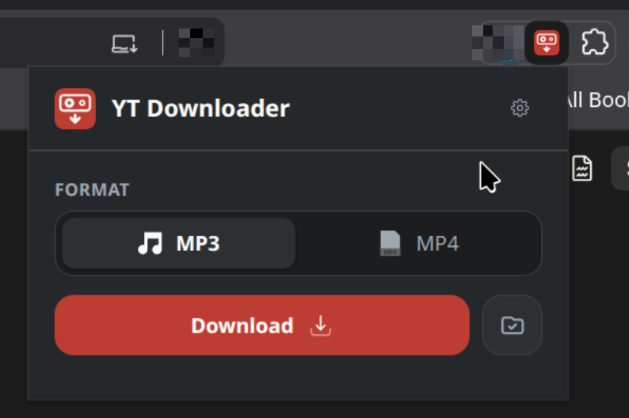
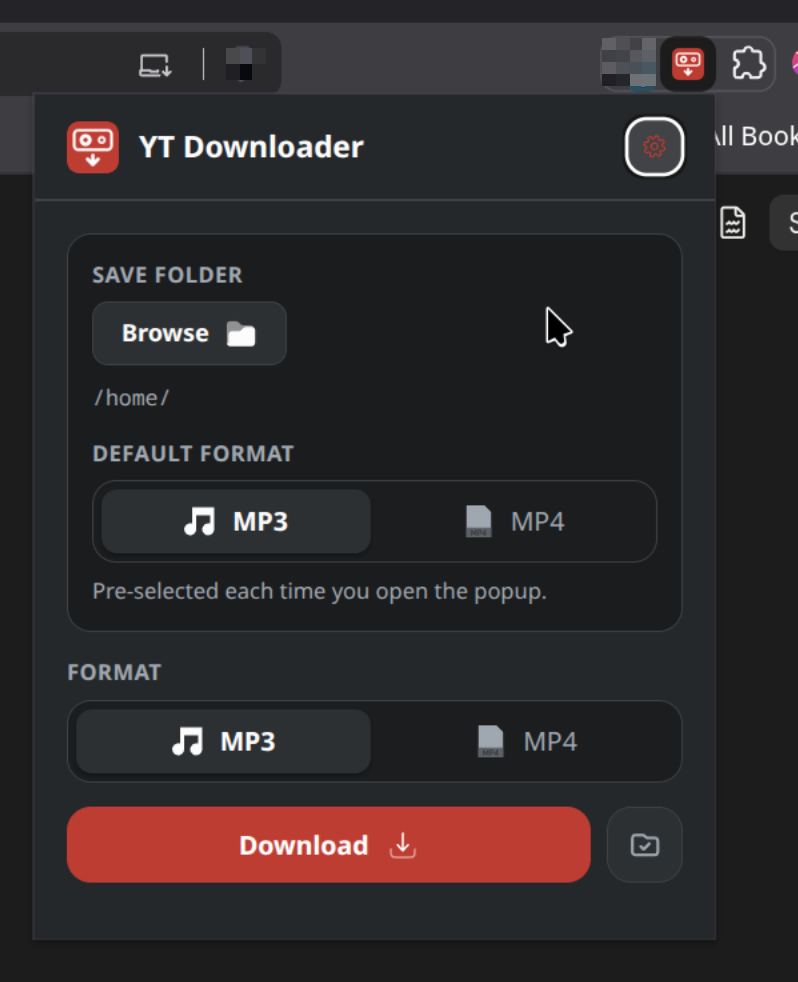

yt-dlp is a command-line program that turns a streaming video page into an ordinary file on disk. This is a button for it. Click it on the tab you are watching and the page's URL goes to a helper on your own machine, which calls yt-dlp and saves the result as MP3 or MP4. It exists because the alternative is opening a terminal and pasting the URL.

Two pieces
The extension never downloads anything itself. It reads the URL of the
tab you are on, sends it to 127.0.0.1:5005, and shows
progress. That address is its only host permission.
The helper is about two hundred lines of standard-library Python around yt-dlp. It binds to loopback, so nothing is reachable from outside the machine, and it is what actually writes files.
popup ──POST /download──▶ helper ──▶ yt-dlp ──▶ your folder
▲ │
└────────GET /status─────────┘Progress
Jobs are listed under the button with a bar, the transfer rate and an estimated time. The helper is polled once a second, but a bar bound directly to those readings steps once a second and sits still in between — so the popup measures the rate and animates continuously, easing toward where the next reading is predicted to land.
Jobs live in memory and are lost when the helper restarts. They are a progress display, not a history.
Settings
The cog holds the two things set once rather than per download: where files are saved, and which format is pre-selected when the popup opens.

The save folder belongs to the helper rather than the extension, which is a consequence of how Browse has to work. A browser popup closes the moment it loses focus, and a folder dialog takes focus — so the dialog outlives the page that asked for it, and there is nothing left to hand the answer back to. The helper opens the dialog, writes the choice down, and the popup reads it back the next time it opens.
What it needs
- A Chromium browser — Brave, Chrome, Edge, Vivaldi. Firefox and Safari are not supported.
- Python 3.8 or newer. The installer fetches yt-dlp itself.
- ffmpeg, for MP3 — the audio is extracted with it.
- Linux, macOS or Windows. The desktop integration — the folder chooser, showing a folder, the finished notification — has a branch for each.
What it talks to
No account, no telemetry, no third-party service. The extension contacts
one address, 127.0.0.1:5005, which is your own machine. The
helper contacts whatever yt-dlp needs to fetch the file you asked for,
and nothing else. Settings are a JSON file in your home directory.
Installing it
It is not on the Chrome Web Store and will not be — the store's policies prohibit extensions that download from YouTube, so a submission would be rejected. There is an installer:
git clone https://github.com/oisinmcgrath/yt-downloader-extension
cd yt-downloader-extension
python3 install.pyIt creates a virtualenv beside the repository, installs yt-dlp, checks for ffmpeg and offers to install it, works out which browser's cookies to use, and registers the helper to start with your session — a systemd user service on Linux, a LaunchAgent on macOS, a Startup entry on Windows.
Loading the extension is then three clicks you do yourself, which the
installer opens the page for. No installer can do that part: Chromium
removed the --load-extension switch for ordinary profiles, and
adding an extension is meant to be visible rather than something a script
does quietly.
- Open
chrome://extensions, orbrave://extensionsin Brave. - Turn on developer mode, click Load unpacked, and choose the
extension/folder.